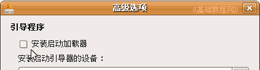

Ubuntu安装基础教程
作者：Teliute 来源：基础教程网
十四、重装 gurb 返回目录 下一课grub 是一个系统引导程序，可以通过 meun.lst 来加载指定的系统，grub4dos 是基于 grub 的，用法相同功能更多，下面我们来看一个练 习，
注意细心，提前准备好，操作一定要仔细，可以先在虚拟机里练习，弄明白了再开始；
1、重装 grub 引导器(修复 grub)
1）首先要知道自己的 Ubuntu 是哪一个分区，这在安装到选择分区时可以看到，平时也可以在“系统设置－系统监视器－文件系统”查看 / 是在哪个分区；
2）启动到 Live cd，点左上角圆圈主按钮，输入 ter 然后打开终端，输入下面的命令，假设 / 是安装在 sda9 分区；
sudo mount /dev/sda9 /mnt3）如果 /boot 是单独分区，那么需要找出 /boot 所在的分区；
4）在 Live cd 的终端下，输入下面的命令，假设 /boot 是安装在 sda4 分区；
sudo mount /dev/sda4 /mnt5）重新将 grub 写入 MBR，假设 Ubuntu 安装在第一块硬盘上；
sudo grub-install /dev/sda
以下是早期的grub恢复方法，供参考：
1）如果在系统安装第7步那儿，没有选中安装引导器，取消了复选框里的勾，就不会安装 grub 引导器，系统也无法被引导；

2）用重新安装的方法，进入到 live CD 桌面，先挂载主分区(或者 /boot 的分区)，根据分区的大小，在位置(Place)菜单里挂载，
这儿假设只有主分区，大小是 5.1 GB，没有单独给 /boot 分区；
这个挂载的分区路径是 /media/disk ，grub 文件夹将会安装在它的 /boot 文件夹里，
2）点左上角的“Applications(应用程序)”菜单，选择 附件－终端，打开终端窗口；
3）进入终端后，输入命令 sudo grub-install --root-directory=/media/disk hd0
先出来密码提示，盲打输入自己的密码，然后按回车键，程序搜索 boot 文件夹，并在它里面安装 grub 文件；
如果要安装到其他分区，把后面的 hd0 改一下，例如改成 /dev/sda9 ，hd0 是安装到主引导 MBR 里；
4）如果下面第三行提示“Installation finished.No error reported.”，就是成功了，
点菜单“Place－5.1GB”，打开 boot 文件夹，里面有了一个 grub 文件夹，就说明成功了；
5）再复制一个别人的 menu.lst，拷贝到 grub文件夹里，先在终端输入下面命令，切换到管理员身份；
sudo nautilus
在出来文件管理器窗口中进行复制和粘贴 menu.lst
6）然后把提前准备好，放在其他磁盘、分区、U盘里的 menu.lst复制进来，
注意要把里面的分区参数、UUID 等，修改为自己的；
7）查看 UUID 的方法是，点位置(place)菜单，依次打开“5.1GB－etc－fstab”，在 fstab 文件里可以看到各个分区的 UUID，
这儿有一个 menu.lst 的范例，可以参考一下
title Ubuntu 9.04, kernel 2.6.28-11-generic
uuid d74bf5df-df2e-4f34-aa86-893c8f742cb3
kernel
/boot/vmlinuz-2.6.28-11-generic
root=UUID=d74bf5df-df2e-4f34-aa86-893c8f742cb3 ro quiet splash
initrd /boot/initrd.img-2.6.28-11-generic
quiet
title Ubuntu 8.10, kernel 2.6.27-14-generic
uuid 7dfaee14-6135-4d2c-8c7e-2cd39d5eb195
kernel
/boot/vmlinuz-2.6.27-14-generic
root=UUID=7dfaee14-6135-4d2c-8c7e-2cd39d5eb195 ro quiet
initrd /boot/initrd.img-2.6.27-14-generic
quiet
title Ubuntu 8.04.2, kernel 2.6.24-23-generic (on /dev/sda2)
root (hd0,1)
kernel
/boot/vmlinuz-2.6.24-23-generic
root=UUID=b35610c1-2a0e-4a01-a25b-5683f5e90ed4 ro quiet splash
initrd /boot/initrd.img-2.6.24-23-generic
savedefault
boot
2、安装 grub4dos 到主引导记录(MBR)
1）准备好 grub4dos 软件包，解压出里面的 bootlace.com 和 grldr 备用，
可以在 http://download.gna.org/grub4dos/ 下载 grub4dos 最新版本；
2）同样用安装盘或镜像文件，启动到 live CD 桌面；
3）点菜单“应用程序(Aplications－附件－终端”，打开一个终端窗口，输入下列命令；
sudo ./bootlace.com /dev/sda
4）注意有个点表示当前，后面的 sda 表示是 SATA 硬盘，如果是 IDE 改成 hda
5）这个直接安装到主引导记录(MBR)里，然后将 grldr 文件复制到主分区的根目录下，不要放到子文件夹里；
6）同样找一个 menu.lst，跟 grldr 放一起即可；
本节学习了在 ubuntu 下，重新安装 grub 和 grub4dos 的基本方法，如果你成功地完成了练习，请继续学习下一课内容；
本教程由86团学校TeliuTe制作|著作权所有
基础教程网：http://teliute.org/
美丽的校园……
转载和引用本站内容，请保留版权信息和本站链接。